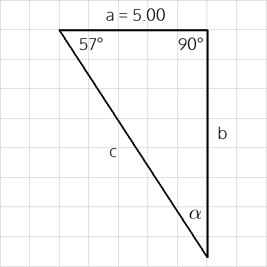
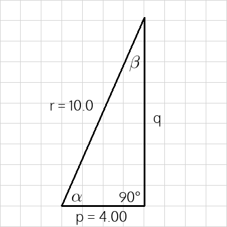

Right Angle Triangles
Triangles with the same shape but different size are called similar.
- Similar triangles have the same set of angles.
- Since the angles in a triangle always add up to 180°, we only need to know that triangle share two angles to be similar; the third angles will have to be equal as well.
- Corresponding sides of similar triangles have the same ratio.
- For triangles containing a right angle, the longest side (opposite from the right angle) is called the hypotenuse.
- The ratios of the sides of a right angle triangle define the sine, cosine, and tangent ratios: $$\sin\theta = \mathrm{\frac{Opp}{Hyp}}$$ $$\cos\theta = \mathrm{\frac{Adj}{Hyp}}$$ $$\tan\theta = \mathrm{\frac{Opp}{Adj}}$$
- We can use these equations to solve for the acute angles when we know at least two of the sides, or to solve for the missing sides if we know one side and one of the acute angles.
- \(\mathrm{Opp}\) refers to the side across from the angle \(\theta\) and \(\mathrm{Adj}\) refers to the side adjacent to \(\theta\).
- Pythagoras’ Theorem describes the relationship between the legs (the two shorter sides) and the hypotenuse: $$\mathrm{Hyp^2 = Opp^2 + Adj^2}$$
Example 1
Solve for the missing angle and sides.

Solve for angle \(\alpha\) using the fact that the sum of the angles is 180°... $$\alpha=180^\circ - 90^\circ - 57^\circ = 33^\circ$$
Solve for side \(b\)... $$\tan 57^\circ=\frac{b}{a}$$
$$a\cdot\tan 57^\circ=b$$
$$b = 5.00\cdot\tan 57^\circ=7.70$$
Solve for side \(c\)... $$\cos 57^\circ=\frac{a}{c}$$
$$c\cdot\cos 57^\circ=a$$
$$c=\frac{a}{\cos 57^\circ} = \frac{5.00}{\cos 57^\circ} = 9.18$$
Example 2
Solve for the missing angles and side.

Solve for side \(q\)... $$r^2 = p^2+q^2$$
$$r^2 - p^2 = q^2$$
$$\sqrt{r^2 - p^2} = q$$
$$q = \sqrt{10.0^2 - 4.00^2} = 9.17$$
Solve for angle \(\alpha\)... $$\cos\alpha=\frac{p}{r}$$
$$\alpha = \cos^{-1}\left(\frac{p}{r}\right)$$
$$\alpha = \cos^{-1}\left(\frac{4.00}{10.0}\right)= 66.4^\circ$$
Solve for angle \(\beta\)... $$\beta=180^\circ - 90^\circ - 66.4^\circ = 23.6^\circ$$